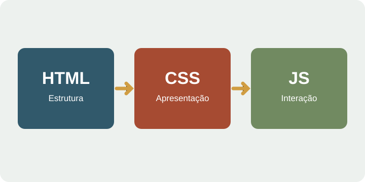

Introdução
O desenvolvimento web combina organização de conteúdo, aparência visual e comportamento interativo.

Fundamentos do HTML
HTML é uma linguagem de marcação usada para descrever a estrutura do conteúdo.
Os elementos devem ser escolhidos de acordo com o significado do conteúdo, não apenas pela aparência.
Estrutura do documento
Um documento HTML5 começa com a declaração do tipo de documento e informa o idioma no elemento raiz.
O elemento head reúne metadados; o body contém o conteúdo que será apresentado ao usuário.
Elementos semânticos
Header, nav, main, article, section, aside e footer ajudam a explicar a organização da página.
Uma hierarquia de títulos coerente facilita a leitura e a navegação assistiva.
Fundamentos do CSS
CSS define cores, tipografia, espaçamentos, dimensões e layout dos elementos HTML.
O arquivo externo permite reaproveitar estilos e manter a apresentação separada da estrutura.
Seletores e classes
Seletores escolhem os elementos que receberão regras; classes podem ser reutilizadas em vários componentes.
IDs identificam um alvo específico na página e também podem funcionar como destino de links internos.
Layout responsivo
Flexbox e Grid ajudam a organizar componentes sem depender de posições fixas para cada tela.
Media queries podem ajustar a apresentação conforme a largura disponível.
O que é SEO?
SEO reúne práticas para que mecanismos de busca compreendam, rastreiem e apresentem páginas relevantes.
SEO orgânico não é o mesmo que links patrocinados; anúncios dependem de campanhas pagas.
Rastreamento e indexação
O crawling é a descoberta e leitura de páginas por robôs dos mecanismos de busca.
Na indexação, o conteúdo é analisado e catalogado para possível exibição em pesquisas.
Metadados
Cada página deve ter título próprio e uma descrição clara que corresponda ao conteúdo real.
O canonical deve apontar para a versão preferencial de uma página quando há URLs equivalentes.
A viewport contribui para uma apresentação apropriada em dispositivos móveis.
Navegação e links
Links devem usar textos descritivos para que o destino seja compreendido antes do clique.
Links internos conectam conteúdos relacionados e ajudam o visitante a explorar o site.
Breadcrumbs apresentam a hierarquia e permitem retornar a níveis anteriores.
Exemplo de caminho
Imagens e mídias
O atributo alt descreve a informação relevante de uma imagem para pessoas que não a visualizam.
Use texto alternativo conciso e contextual; evite repetir palavras-chave artificialmente.
Declarar width e height ajuda o navegador a reservar espaço e reduz deslocamentos de layout.
Dados estruturados
JSON-LD permite fornecer contexto estruturado sobre o conteúdo de uma página.
Os dados devem corresponder ao conteúdo visível e verdadeiro do documento.
Acessibilidade e experiência
Rótulos claros, contraste adequado e foco de teclado ajudam diferentes pessoas a usar a página.
Não dependa somente de cor para transmitir informação importante.
Formulários devem associar cada campo a um label e apresentar instruções compreensíveis.
Desempenho e confiança
Arquivos otimizados e carregamento eficiente contribuem para uma boa experiência.
HTTPS protege a comunicação entre navegador e servidor.
Conteúdo original, útil e atualizado deve ser priorizado em vez de repetição de palavras-chave.
Checklist de revisão antes da publicação
Use esta lista para revisar a página; marcar um item não representa garantia de posicionamento.
- Idioma: confirme se o atributo lang corresponde ao idioma principal.
- Título: escreva um título específico para a página.
- Descrição: resuma o conteúdo sem prometer o que a página não oferece.
- Canonical: informe a URL definitiva depois de publicar.
- Headings: mantenha uma hierarquia lógica de títulos.
- Links: use textos que expliquem o destino.
- Imagens: escreva textos alternativos úteis para imagens informativas.
- Dimensões: declare dimensões para reduzir mudanças inesperadas no layout.
- Conteúdo: priorize informações originais, úteis e bem organizadas.
- Dados estruturados: valide o JSON-LD e mantenha apenas dados verdadeiros.
- Robots: confirme se a página deve ou não ser indexada.
- Mobile: teste a leitura em telas pequenas.
- Contraste: verifique a legibilidade do texto e dos controles.
- Teclado: navegue pelos links e formulários sem usar o mouse.
- Carregamento: reduza o peso desnecessário de imagens e arquivos.
- HTTPS: publique em conexão segura quando o serviço estiver disponível.
- Erros: procure links quebrados e imagens que não carregam.
- Atualização: retire datas, preços e informações que estejam desatualizadas.
- Pesquisa: teste se os termos usados no título refletem o assunto real.
- Evidências: registre a ferramenta, a data e os resultados de auditorias externas.
SEO reúne várias práticas; nenhuma lista isolada garante uma posição específica nos buscadores.
Conclusão
Uma página bem construída combina estrutura semântica, apresentação clara, acessibilidade e conteúdo relevante.
As práticas de SEO ajudam buscadores a entender o conteúdo, mas não garantem uma posição específica nos resultados.